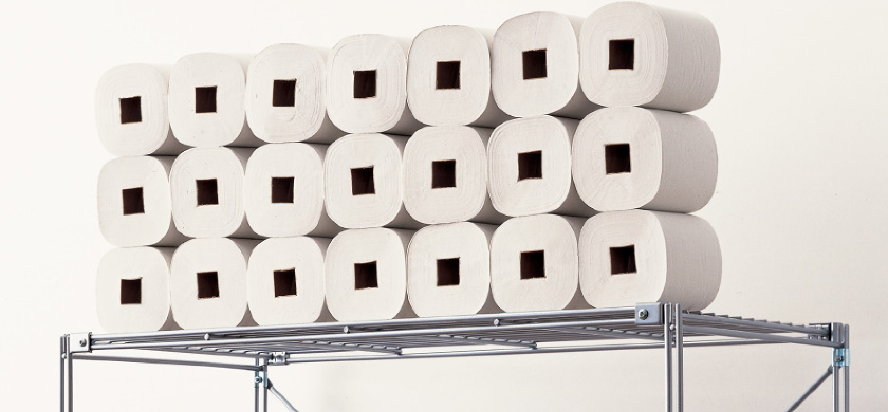

사회적 문제를 해결하는 아이디어의 원천은 무엇일까. 하라 켄야는 디자인은 단순히 만드는 기술이 아니라고 말한다. 오히려 눈과 귀를 활짝 열고 생활 속에서 새로운 의문을 발견해나가는
것이라고 주장한다.
우리는 일반적으로 창조라고 하면 무에서 유를 만들어 내는 것이라고 생각하지만, 하라 켄야는 일상에서 찾는 것을 강조한다. 이러한 그의 디자인 행위는 곧 ‘일상의 미지화’로 대변된다.
기지화된 것, 즉 이미 알고 있는 것은 우리에게 매력을 주지 못한다. 디자이너는 기존의 것을 미지화 함으로써 창조를 일구어낸다. 생활 속에서 새로운 의문을 발견해 나가는 일은 비단
디자이너뿐만 아니라 우리 모두에게 더 나은 일상을 위한 좋은 지침이 될 것이다.
[사용할 때마다 직관적이고 명확한 메세지를 읽을 수 있다. (출처: designboom.com)]
“제로에서 새로운 것을 만들어 내는 것도
창조지만 기존을 것을 미지화하는 것 역시
창조라고 할 수 있다.”
